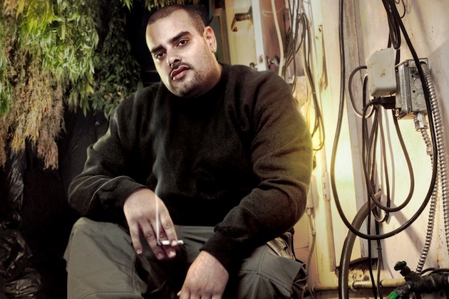
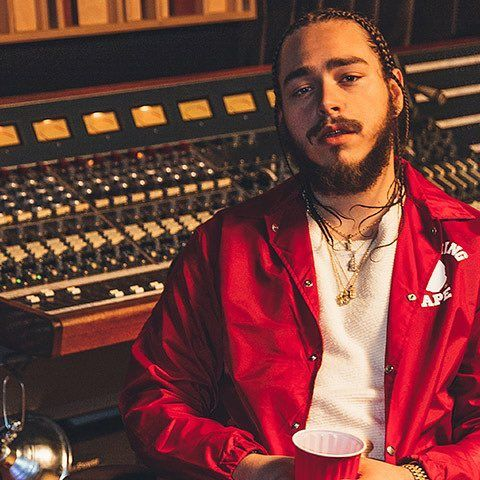

Cameron Jibril Thomaz (born September 8, 1987), better known by his stage name Wiz Khalifa, is an American rapper, songwriter, and actor. He released his debut album, Show and Prove, in 2006, and signed to Warner Bros. Records in 2007. His Eurodance-influenced single, "Say Yeah", received urban radio airplay, charting on the Rhythmic Top 40 and Hot Rap Tracks charts in 2008. Khalifa parted with Warner Bros. and released his second album, Deal or No Deal, in November 2009. He released the mixtape Kush and Orange Juice as a free download in April 2010; he then signed with Atlantic Records. He is also well known for his debut single for Atlantic, "Black and Yellow", which peaked at number one on the Billboard Hot 100. His debut album for the label, Rolling Papers, was released on March 29, 2011. He followed that album with O.N.I.F.C. on December 4, 2012, which was backed by the singles "Work Hard, Play Hard" and "Remember You". Wiz released his fourth album Blacc Hollywood on August 18, 2014, backed by the lead single "We Dem Boyz". In March 2015, he released "See You Again" for the soundtrack of the film Furious 7 and the song peaked at number one on the Billboard Hot 100 for 12 non-consecutive weeks.
Gilbert Milam Jr., better known by his stage name Berner, is a Mexican American rapper, businessman and entrepreneur from San Francisco, California. He is a touring recording artist signed to Taylor Gang since 2012, the label run by Wiz Khalifa. Berner has released 16 albums, several of which have charted on Billboard's "Top R&B/Hip Hop Albums" chart. Berner has also become a fashion and marijuana industry entrepreneur with his own medical marijuana dispensaries, Cookies SF, Collective Efforts, and H2C Cookies 707; he also owns two lifestyle clothing companies: FreshKo and Cookies. He also runs a line of "hemp water" named Hemp20, produces the Marijuana Mania TV series.
Austin Richard Post (born July 4, 1995), known professionally as Post Malone, is an American rapper, singer, songwriter and record producer. He first gained major recognition in February 2015, after the release of his debut single "White Iverson". In August 2015, Malone landed a record deal with Republic Records. On December 9, 2016, he released his debut studio album Stoney.